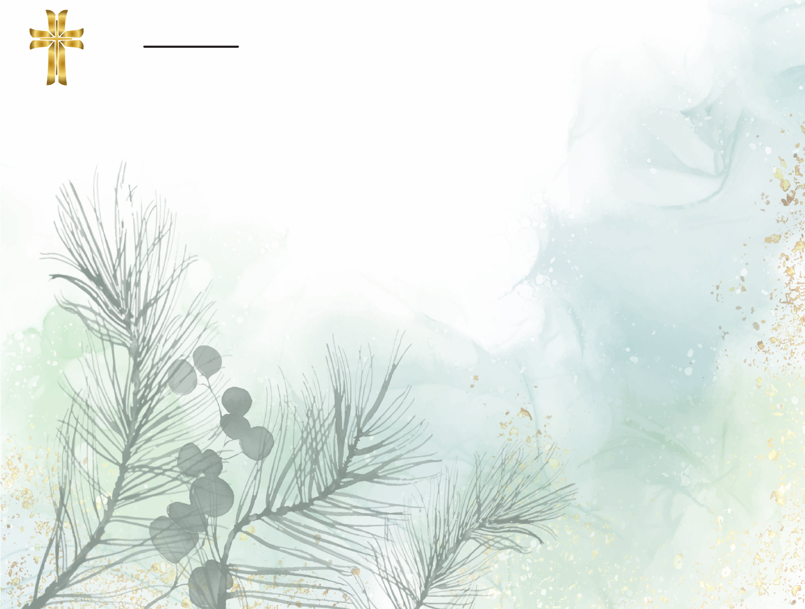

Cubrimiento Regional
Alterón Sur, Alto de Melos, Hoya del Chipal, Alto del Gramal, Alto de Ruedas, La Chorrera,
La Florida, Barranquillas, La Montaña, Barrial Amarillo, La Unión - Las Pilas, Boca de
Monte, Morieles, Novilleros, Cañabraval, La Oscura, Otumbe, Charco de los Indios, Palacios
Alto, El Cajón, Palacios Bajo, El Caliche, Palenque, El Cural, Parri, El Chorro, Patalinares,
El Guadual - Potrero, El Guamal, Sabaneta, Cuatro Caminos, Santa Inés, Suzne, El Silencio,
Trapiche Viejo, El Zarbal, Buena Vista, El Capote, La Paulina, La Tomita, Loma Redonda,
Tatí, Tierra Negra, Tierreros, Alto de Brisas, Acuapal, Alterón Norte, El Pedregal, El
Valiente, Gracias, La Calaca, La Laja, La Morada, La Pita, San Carlos, Trapiche
Guayabillo, Volcanes, El Oso, Cáceres, Mata de Guadua, Salinas, Taticito, Nacopay,
Acuaparales, Alto del Ramal, Cedrales, Culatas, El Tostado, Estoraques, Galindos, La Fría,
La Miel, Mata de Plátano, Mesetas, Naranjos, Potosí, San Pedro Bajo, San Pedro Alto, Alto de
Camachos, Barro Blanco, El Pisco, El Retiro, La Azauncha, La María, Loma de Aldanas,
Cambrás, Las Balsas, Boca de Monte Lajas, Córdoba, Trapiche, El Dindal, Tembladal,
Salsipuedes, El Chorrillo, Juntas, San Ramón Alto, Montaña Negra, San Gil, Canchimay, El
Dinde, Las Vueltas, Puerto Colombia, San Cayetano, Alto de la Punta, El Cámbulo,
Higueronal, Peñalosa, La Ceiba, El Roble.
Aréa de Convergencia
Caparrapi y sus 116 veredas:
Santiago Apostol
Funeraria
Caparrapi - Cundinamarca